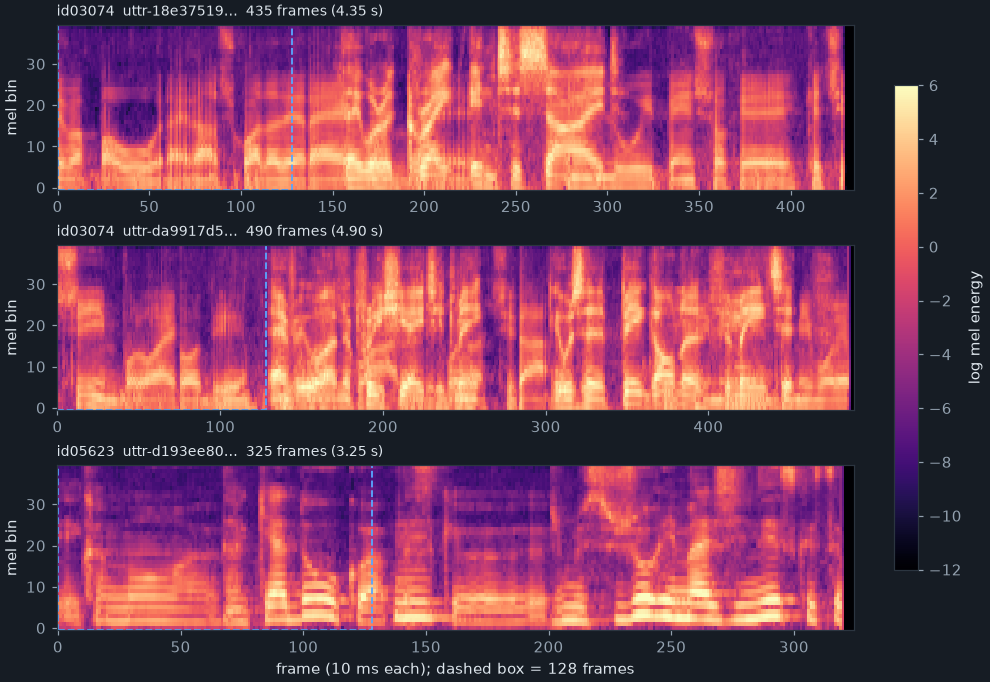

1.1 資料夾裡有什麼
第 0 章 0.4 節看過 HW04/Dataset/ 的樣子。這一章把每一樣東西打開。先看大小（ls -l 與 du -sh 的實測）：
| 檔案 | 大小 | 內容 | 程式有沒有用到 |
|---|---|---|---|
metadata.json | 7,731,814 bytes | 訓練語句：600 位說話者，每句的檔名與長度 | dataset.py |
testdata.json | 960,912 bytes | 測試語句：8,000 句的檔名與長度，沒有說話者 | test.py |
mapping.json | 20,212 bytes | 說話者名稱與 0–599 編號的對照 | dataset.py、test.py |
uttr-*.pt × 64,666 | 合計約 6.6 GB | 一句話一個檔，每個檔是一個 tensor | 兩者都用 |
log_melspectrogram.pt | 56,729 bytes | 把聲音轉成 log mel-spectrogram 的程式（TorchScript） | 沒有 |
sox_effects.pt | 4,190 bytes | 轉換前的聲音前處理（TorchScript） | 沒有 |
64,666 恰好是 56,666 句訓練語句加 8,000 句測試語句，兩個 json 裡列的檔名本書比對過，沒有重複、也沒有缺檔。檔名是 uttr- 加 32 個十六進位字元（例如 uttr-18e375195dc146fd8d14b8a322c29b90.pt），看起來是隨機產生的 ID：檔名不帶任何資訊，不像 HW03 的 3_120.jpg 把類別寫在檔名裡。誰說了哪一句，只能從 metadata.json 查。
train.py 開頭有一段從 notebook 搬過來的說明文字，描述的就是這個資料夾：
"""# Data
## Dataset
- Original dataset is [Voxceleb2](https://www.robots.ox.ac.uk/~vgg/data/voxceleb/vox2.html).
- The [license](https://creativecommons.org/licenses/by/4.0/) and [complete version](https://www.robots.ox.ac.uk/~vgg/data/voxceleb/files/license.txt) of Voxceleb2.
- We randomly select 600 speakers from Voxceleb2.
- Then preprocess the raw waveforms into mel-spectrograms.
- Args:
- data_dir: The path to the data directory.
- metadata_path: The path to the metadata.
- segment_len: The length of audio segment for training.
- The architecture of data directory \\
- data directory \\
|---- metadata.json \\
|---- testdata.json \\
|---- mapping.json \\
|---- uttr-{random string}.pt \\
- The information in metadata
- "n_mels": The dimention of mel-spectrogram.
- "speakers": A dictionary.
- Key: speaker ids.
- value: "feature_path" and "mel_len"
For efficiency, we segment the mel-spectrograms into segments in the traing step.
"""這一段是 notebook 裡的 Markdown 格子，拆成 .py 檔時變成一個三引號字串，Python 會建立它然後丟掉，對程式沒有任何作用；行尾的 \\ 是 Markdown 的換行記號。內容大致正確：資料是 VoxCeleb2 隨機挑的 600 人（第 39 行），已經轉成 mel-spectrogram（第 40 行）。只有一處和程式對不上：第 44 行列了參數 metadata_path，但 myDataset（1.8 節）只收 data_dir 和 segment_len 兩個參數，metadata.json 的路徑是在程式裡寫死、由 data_dir 拼出來的。
1.2 metadata.json：誰說了哪幾句
用任何文字編輯器打開 metadata.json，開頭長這樣（逐字）：
{
"n_mels": 40,
"speakers": {
"id03074": [
{
"feature_path": "uttr-18e375195dc146fd8d14b8a322c29b90.pt",
"mel_len": 435
},
{
"feature_path": "uttr-da9917d5853049178487c065c9e8b718.pt",
...結構和 train.py:53-57 說的一樣：最外層兩個鍵，n_mels 是 40（每一格有 40 個數字，1.6 節說明為什麼），speakers 是一個字典，鍵是說話者的代號、值是那個人所有句子的清單；每一句有兩個欄位，feature_path 是檔名、mel_len 是這句話有幾格。說話者代號是 VoxCeleb2 原本的編號，這 600 人落在 id00036 到 id09271 之間。檔案有 7.7 MB，是因為它用 4 個空白縮排、一個欄位一行，內容本身不多。
一個值得注意的細節：speakers 裡的順序沒有排序，第一位是 id03074，接著是 id05623、id06406、id01014、id02426……。Python 3.7 以後的 dict 會保留插入順序，所以 json.load 讀進來也是這個順序，1.8 節的 myDataset 就照這個順序把句子排成一長串。
每個人說了幾句
600 位說話者，每人 80–111 句，平均 94.4 句、中位數 94 句。最少的 id00905 有 80 句，最多的 id00206 有 111 句（全部只有這一位到 111）。以 5 句為一組數人數：
| 每人句數 | 80–84 | 85–89 | 90–94 | 95–99 | 100–104 | 105–109 | 110–111 |
|---|---|---|---|---|---|---|---|
| 人數 | 87 | 120 | 95 | 111 | 102 | 67 | 18 |
和 HW03 的食物（最少的一類 280 張、最多的 1,500 張，差了五倍多）比起來，這份資料相當平均：最多的人只比最少的多 39%。所以這份作業不必處理類別不平衡，「全部猜同一個人」只能猜對大約 1/600。這麼整齊的分布，看起來是助教挑資料時限制過每人的句數（推論，投影片沒有說）。
1.3 句子有多長
mel_len 的單位是「格」（frame）。1.6 節會從前處理器算出一格是 10 毫秒，先記住「100 格 = 1 秒」就好。56,666 句訓練語句的長度：
最短
91 格（0.91 秒）
中位數
541 格（約 5.4 秒）；平均 658.1 格
最長
7,193 格（約 72 秒）
合計
37,291,397 格，約 103.6 小時的語音
| 長度（格） | 句數 | 長度（格） | 句數 | 長度（格） | 句數 |
|---|---|---|---|---|---|
| 0–99 | 1 | 700–799 | 4,410 | 1,400–1,499 | 492 |
| 100–199 | 9 | 800–899 | 2,965 | 1,500–1,599 | 394 |
| 200–299 | 310 | 900–999 | 2,152 | 1,600–1,699 | 287 |
| 300–399 | 6,357 | 1,000–1,099 | 1,460 | 1,700–1,799 | 223 |
| 400–499 | 16,608 | 1,100–1,199 | 1,180 | 1,800–1,899 | 188 |
| 500–599 | 10,570 | 1,200–1,299 | 850 | 1,900–1,999 | 165 |
| 600–699 | 6,689 | 1,300–1,399 | 631 | 2,000 以上 | 725 |
分布有三個特徵，後面幾章都會用到：
- 幾乎每一句都比 128 格長。短於 128 格的只有 2 句：
id02097的一句 91 格、id02475的一句 116 格。訓練時每句話只隨機切 128 格（1.28 秒）來用（第 2 章），所以「把長度不一的句子補到一樣長」這件事，在這份資料上幾乎不會發生；第 2 章會看到補值 -20 的那段程式，實際上只對這 2 句起作用。 - 一個片段只看到一句話的一小部分。半數的句子超過 541 格，128 格的片段平均只占一句話的 23.1%（本書逐句算 min(128, 長度) ÷ 長度再平均）。每次取用同一句話，切到的位置都不同（第 2 章），所以 44 個 epoch 裡模型會看到同一句話的許多不同片段。
- 右邊拖著長尾。超過 1,000 格（10 秒）的有 6,589 句，超過 2,000 格（20 秒）的還有 724 句。訓練時切段，長尾不影響；但第 5 章的
test.py送的是整句，自注意力的計算量和長度的平方成正比，最長的測試語句要算 4,940 × 4,940 個注意力分數。
測試語句的長度分布幾乎一樣：8,000 句、最短 214 格、中位數 538、平均 650.1、最長 4,940，沒有任何一句短於 128 格，合計約 14.5 小時。所以「訓練切 128 格、測試看整句」的差別，不是因為測試語句特別長，而是程式的做法本來就不同（第 0 章 0.7 節、第 5 章）。
1.4 mapping.json 與 testdata.json
模型的輸出是 600 個分數，第幾個分數代表誰，由 mapping.json 決定。它沒有縮排、整個檔案只有一行，開頭是（逐字）：
{"speaker2id": {"id00464": 0, "id00559": 1, "id00578": 2, "id00905": 3, "id01920": 4, "id02368": 5, ...
... "id2speaker": {"0": "id00464", "1": "id00559", "2": "id00578", "3": "id00905", ...兩個方向各一張表：speaker2id 把說話者代號換成 0–599 的編號（訓練時把標籤變成數字），id2speaker 把編號換回代號（test.py 寫答案時用）。本書檢查過：編號恰好是 0 到 599、兩張表互為反函數。有兩個地方容易踩到：
- 編號的順序不是 metadata 的順序，也不是代號排序。編號 0 是
id00464、599 是id00206；metadata.json的第一位id03074是編號 436。所以千萬不能自己用enumerate(metadata["speakers"])編號，一定要查mapping.json，訓練與測試才會用同一套編號。 id2speaker的鍵是字串。JSON 的物件鍵只能是字串，所以存進去時的整數 0 變成了"0"。test.py:83查表時寫mapping["id2speaker"][str(pred)]，那個str()就是為了這個。
testdata.json 的結構比 metadata 簡單，因為沒有標籤（逐字）：
{
"n_mels": 40,
"utterances": [
{
"feature_path": "uttr-b52ddeaacf1b42ff9c947eadce3e1966.pt",
"mel_len": 813
},
...一個清單、8,000 個元素，順序就是 output.csv 的順序（第 0 章 0.6 節的第一行答案就是這個 uttr-b52d…）。
1.5 一句話的 tensor
拿 metadata 的第一句來看。在 HW04/ 裡執行：
$ ../.venv/bin/python -c "
import torch
x = torch.load('Dataset/uttr-18e375195dc146fd8d14b8a322c29b90.pt')
print(type(x), x.dtype, x.shape)
print(x[:3, :5])
print(x.min().item(), x.max().item())
"實測輸出：
<class 'torch.Tensor'> torch.float32 torch.Size([435, 40]) «1»
tensor([[2.8591, 3.6222, 2.3766, 1.9587, 2.6407], «2»
[2.9617, 2.3626, 3.1416, 2.5672, 2.6972],
[2.1096, 1.4357, 2.8225, 1.8464, 2.3077]])
-20.7232666015625 6.2613043785095215 «3»- 1一個普通的 float32 tensor，形狀
(435, 40)：第一維是時間（435 格，和 metadata 的mel_len相同），第二維是 40 個 mel 頻帶。注意是時間在前，正好是第 0 章Classifier要的(長度, 40)，疊成 batch 後就是(batch, 長度, 40)。 - 2前 3 格、前 5 個頻帶的值。每一個數字是「這 10 毫秒裡、這個頻帶的能量」取自然對數，所以有正有負。
- 3最小值 -20.7233、最大值 6.2613。最小值不是巧合：它等於 ln(10−9) = −20.72327，是前處理在取對數之前設的下限（1.6 節）。
本書把 64,666 個檔全部讀過一遍（docs/tools/hw04_facts.py mel，約 11 秒）：每一個都是 float32、二維、第二維 40，每一個檔的格數都和 json 裡的 mel_len 一致。訓練語句的值域是 −20.72327 到 8.92315、整體平均 −2.017；56,666 個檔裡有 26,838 個（47%）的最小值恰好碰到 −20.72327 這個下限，也就是說將近一半的句子裡至少有一格、一個頻帶的能量是 0（靜音、或錄音本身沒有那個頻率）。測試語句的值域幾乎相同（−20.72327 到 8.90663）。
檔案大小也對得上：這一句的 .pt 是 70,315 bytes，435 × 40 個 float32 是 69,600 bytes，多出來的是 PyTorch 存檔格式本身的結構。全部 64,666 句平均 657 格，光是 float32 的數值就有 42,492,208 × 40 × 4 = 6,798,753,280 bytes；整個資料夾的實際大小是 6,854,834,577 bytes，du -sh 以 1024 為單位、再加上磁碟區塊的零頭，顯示成 6.6G。
為什麼補值是 -20
第 2 章的 collate_batch 會把不夠長的句子補上 -20，程式註解寫「pad log 10^(-20) which is very small value」。看過這一節就知道它的意思：資料的值是能量取 log，最小只到 −20.72，所以 −20 已經非常接近「沒有聲音」。補上的格子在模型看來就像一段靜音，而不是一段奇怪的雜訊。（註解寫的 log 10−20 其實是以 10 為底的寫法，自然對數下 −20 對應的是 e−20；兩者都是「非常小的能量」，意思沒有錯。）
1.6 mel-spectrogram 是怎麼來的
投影片第 6 頁用一張圖交代了前處理：聲波（waveform）→ 離散傅立葉轉換（DFT）→ 頻譜圖（spectrogram）→ 濾波器組（filter bank）→ 取 log → mel-spectrogram。實際用了什麼參數，投影片沒說，程式也沒說——HW04/ 的四個 .py 都只讀現成的 .pt。線索在資料夾裡那兩個沒被用到的檔案：log_melspectrogram.pt 和 sox_effects.pt。它們是 TorchScript：把一個 PyTorch 模組連同程式碼一起存起來的格式，用 torch.jit.load 就能載入、印出它的程式碼與設定。
$ ../.venv/bin/python -c "
import torch
m = torch.jit.load('Dataset/log_melspectrogram.pt')
print(m)
print(m.code)
ms = m.melspectrogram
print(ms.sample_rate, ms.n_fft, ms.win_length, ms.hop_length, ms.n_mels, ms.f_min, ms.f_max)
"實測輸出：
RecursiveScriptModule(
original_name=LogMelspectrogram
(melspectrogram): RecursiveScriptModule(
original_name=MelSpectrogram
(spectrogram): RecursiveScriptModule(original_name=Spectrogram)
(mel_scale): RecursiveScriptModule(original_name=MelScale)
)
)
def forward(self,
wav_tensor: Tensor) -> Tensor:
melspectrogram = self.melspectrogram
_0 = (melspectrogram).forward(wav_tensor, )
mel_tensor = torch.numpy_T(torch.squeeze(_0, 0))
_1 = torch.clamp(mel_tensor, 1.0000000000000001e-09)
return torch.log(_1)
16000 400 400 160 40 50.0 NoneMelSpectrogram、Spectrogram、MelScale 是 torchaudio 的類別名稱，所以這個模組當年是用 torchaudio 建的。forward 的四行就是整個轉換：算 mel-spectrogram，squeeze 掉聲道那一維、numpy_T 轉置成「時間在前」，把小於 10−9 的值夯到 10−9，再取自然對數。最後一行的七個數字把投影片那張圖變成了具體的參數：
sample_rate16000：聲音一秒取 16,000 個點，是語音常用的取樣率，能保留到 8 kHz 的頻率。n_fft、win_length400：每次取 400 個點（400 ÷ 16,000 = 25 毫秒）做一次傅立葉轉換，得到 400 ÷ 2 + 1 = 201 個頻率的強度。power2.0 表示取的是振幅的平方，也就是能量。hop_length160：每次往後移 160 個點，也就是 10 毫秒。這就是「一格 = 10 ms、100 格 = 1 秒」的來源。相鄰兩格的窗有 15 毫秒重疊。n_mels40、f_min50.0、f_maxNone：用 40 個三角形的濾波器，把 201 個頻率合成 40 個頻帶，範圍從 50 Hz 到取樣率的一半 8 kHz（None代表預設的一半）。濾波器在 mel 尺度上等距：低頻窄、高頻寬，模仿人耳對低頻比較敏感。這就是n_mels40 的意思，也是classifier.py裡nn.Linear(40, d_model)那個 40 的來源。
另一個檔 sox_effects.pt 用同樣的方式載入，卻會失敗：
RuntimeError:
Unknown builtin op: torchaudio::sox_effects_apply_effects_tensor.
Could not find any similar ops to torchaudio::sox_effects_apply_effects_tensor. This op may not exist or may not be currently supported in TorchScript.這不是 PyTorch 不支援，而是本書的環境沒有安裝 torchaudio：這個模組呼叫了 torchaudio 用 C++ 寫的 SoX 運算子，沒有 torchaudio 就找不到它（log_melspectrogram.pt 只用到 PyTorch 本身的傅立葉轉換與矩陣乘法，所以載得起來）。不執行它，也能直接讀它存的設定：TorchScript 檔其實是一個 zip，裡面的 data.pkl 存著 effects 這個屬性。本書把它解開，讀到四組 SoX 效果：channels 1（轉成單聲道）、rate 16000（重新取樣到 16 kHz）、norm -3.0（把音量正規化到峰值 −3 dB）、silence 1 0.1 1.0% -1 0.1 1.0%。最後這組照 SoX 的語法，前半段 1 0.1 1.0% 是「從開頭切掉音量低於 1% 的靜音，直到出現 0.1 秒以上的聲音」，後半段的 -1 是負數，意思是「整段聲音裡，每一段持續 0.1 秒以上、音量低於 1% 的靜音都刪掉」，不只是頭尾。這組參數是從 data.pkl 裡的字串片段拼回來的，本書沒有辦法執行它來確認。
所以一句話在變成 .pt 之前，已經被轉成單聲道、統一取樣率與音量，而且長一點的靜音都被刪掉了。這可以解釋 1.3 節為什麼有短到 0.91 秒的句子：靜音刪掉之後，剩下的語音可能比原本的片段短很多。本書沒有原始聲音可以比對，這是推論。
現在的做法：torch.load 的 weights_only
如果你用 torch.load 而不是 torch.jit.load 去讀 log_melspectrogram.pt，PyTorch 2.11 會先警告「這看起來是 TorchScript 檔，轉給 torch.jit.load」，接著直接報錯：Cannot use ``weights_only=True`` with TorchScript archives passed to ``torch.load``. In PyTorch 2.6, we changed the default value of the `weights_only` argument in `torch.load` from `False` to `True`. 2022 年的 PyTorch 預設 weights_only=False，torch.load 會用 pickle 還原檔案裡的任何 Python 物件，載入來路不明的檔案等於執行它的程式碼；2.6 起預設只還原 tensor 與基本型別。本 repo 的 uttr-*.pt 和 model.ckpt 裡只有 tensor（或 tensor 組成的字典），所以 dataset.py、test.py 的 torch.load 在新預設下照樣能用，不必改。另外，TorchScript 本身在新版 PyTorch 已經不再積極發展，部署模型時現在更常用 torch.export 或 ONNX；torchaudio 也在 2.x 版陸續移除了 SoX 相關的功能。
1.7 看幾句話
把 tensor 畫成圖：橫軸是時間（格），縱軸是 40 個 mel 頻帶（下面是低頻），顏色是 log 能量，越亮越強。下面三張圖是 metadata.json 的前兩位說話者——id03074 的第 1、2 句，和 id05623 的第 1 句，用同一個顏色範圍畫（−12 到 6，低於 −12 的都畫成最黑）。藍色虛線框是 128 格的大小，也就是訓練時模型一次看到的範圍。圖用 docs/tools/hw04_facts.py figs 產生。

幾件看得出來的事：
- 亮的橫紋出現在下半部、而且隨時間彎曲：那是說話時聲帶振動的基頻與它的倍頻（諧波），音調高低一變，條紋就跟著上下移動。
- 暗的直條是能量很低的瞬間，例如字與字之間的短暫停頓。長於 0.1 秒的靜音已經在前處理時刪掉了（1.6 節），所以留下來的暗條都很窄。
- 同一個人的兩句（上、中）在整體的明暗分布上比較像——哪幾個頻帶通常比較亮、諧波的間距多寬——和另一個人（下）不太一樣。這就是模型要學的：不是說了什麼，而是聲音的「質地」。
- 128 格的虛線框只占每句話的一小段，裡面可能剛好是一段停頓；第 2 章會看到，訓練時每次取用都切在不同位置。
這些觀察是看圖得到的直覺，不是量出來的結論。模型實際上靠哪些特徵分辨說話者，本書沒有去拆解。
1.8 myDataset 的 __init__：把 json 變成一張清單
知道資料長什麼樣之後，再看程式怎麼讀它。dataset.py 的 myDataset 在建立時只讀兩個 json，不讀任何 .pt：
class myDataset(Dataset):
def __init__(self, data_dir, segment_len=128):
self.data_dir = data_dir
self.segment_len = segment_len
# Load the mapping from speaker neme to their corresponding id.
mapping_path = Path(data_dir) / "mapping.json"
mapping = json.load(mapping_path.open())
self.speaker2id = mapping["speaker2id"]
# Load metadata of training data.
metadata_path = Path(data_dir) / "metadata.json"
metadata = json.load(open(metadata_path))["speakers"]
# Get the total number of speaker.
self.speaker_num = len(metadata.keys())
self.data = []
for speaker in metadata.keys():
for utterances in metadata[speaker]:
self.data.append([utterances["feature_path"], self.speaker2id[speaker]])第 16–18 行讀 mapping.json，只留下 speaker2id 那一張表（id2speaker 是 test.py 才用）；註解裡的「speaker neme」是原版就有的錯字。第 21–22 行讀 metadata.json，只取 "speakers"，n_mels 被忽略——程式不檢查它是不是 40，模型裡的 40 是寫死的。注意第 17 行用 mapping_path.open()、第 22 行用 open(metadata_path)，兩種寫法做的是同一件事，而且兩個檔案都沒有關閉（交給 Python 回收時關），這在一次性的腳本裡無害。
第 25 行把說話者人數記成 self.speaker_num，train.py:251 建模型時用它當 n_spks，所以模型的輸出是 600 維是從資料數出來的，不是寫死的。第 27–29 行是核心：照 metadata 的順序，把每一句變成一個 [檔名, 編號] 的小清單，接在 self.data 後面。實際建一次：
$ ../.venv/bin/python -c "
from dataset import myDataset
d = myDataset('./Dataset')
print(len(d), d.get_speaker_number())
print(d.data[0], d.data[1], d.data[-1])
"56666 600
['uttr-18e375195dc146fd8d14b8a322c29b90.pt', 436] ['uttr-da9917d5853049178487c065c9e8b718.pt', 436] ['uttr-b92e3aefd528451d92cba54a97bd3b62.pt', 347]56,666 句、600 人。第一、二句都是 id03074 的，編號 436（1.4 節）；同一個人的句子在清單裡是連在一起的，所以這張清單如果不打亂直接切成訓練與驗證，驗證集就會整批都是最後幾十個人。train.py 用 random_split 隨機切，第 2 章會看它切出了什麼。
這個 __init__ 把 6.6 GB 的資料變成一張只有字串與整數的清單，本書實測建立只要 0.79 秒；真正讀檔、切 128 格的是 __getitem__，每取一句才讀一個 .pt。這是處理大資料集的標準做法：Dataset 只記得「東西在哪」，用到時才去拿。__getitem__ 與 DataLoader 是下一章的主題。
本章重點
Dataset/有三個 json 和 64,666 個uttr-*.pt（56,666 訓練 + 8,000 測試）；檔名是隨機 ID，誰說的只能查metadata.json。- 600 位說話者、每人 80–111 句，相當平均。編號 0–599 由
mapping.json決定，順序不是 metadata 的順序；id2speaker的鍵是字串。 - 一句話是 float32、形狀
(T, 40)的 tensor，時間在前；一格 10 ms，訓練語句 91–7,193 格、中位數 541；只有 2 句短於 128 格，128 格平均只看到一句話的 23%。 - 值是 log mel 能量，下限 ln(10−9) = −20.72，所以補值 −20 接近靜音。
- 前處理參數從兩個 TorchScript 檔讀出：單聲道 16 kHz、音量正規化、刪掉長於 0.1 秒的靜音；25 ms 窗、10 ms 位移、40 個 mel 頻帶（50 Hz–8 kHz）、clamp 後取 log。
sox_effects.pt需要 torchaudio 才載得起來。 myDataset.__init__只讀 json，把每句變成[檔名, 編號]，同一人的句子連在一起。
自我測驗
1. 一句 mel_len 為 541 的話，原本大約多長？它的 .pt 檔大約多大？
一格 10 毫秒，541 格約 5.4 秒（嚴格說，center=True 的 STFT 有 1 + ⌊取樣點數 ÷ 160⌋ 格，所以是 5.40–5.41 秒）。tensor 有 541 × 40 個 float32，541 × 40 × 4 = 86,560 bytes，加上存檔格式的一點結構（1.5 節那句 435 格的檔案多了約 700 bytes），大約 87 KB。
2. 如果有人把 mapping.json 弄丟了，改用 {spk: i for i, spk in enumerate(metadata["speakers"])} 重新編號、重新訓練，再用原本的 test.py 預測，會發生什麼事？
訓練本身沒問題，模型會學會一套新的編號；但 test.py 仍然讀原本的 id2speaker（如果檔案還在）把編號翻回代號，兩套編號不一樣，幾乎每一句都會被寫成錯的人——例如新編號 0 是 id03074，原本的 id2speaker["0"] 卻是 id00464。準確率會掉到接近亂猜。訓練與測試一定要用同一張對照表。本書沒有實際跑這個實驗，這是從兩張表的內容推論的。
3. 資料的最小值為什麼是 −20.7233，而不是負無限大？
log mel 能量在某一格、某一頻帶完全沒有能量時是 0，ln 0 是負無限大。log_melspectrogram.pt 在取 log 之前先 clamp 到 10−9，所以最小值是 ln(10−9) = −20.723。56,666 句裡有 26,838 句至少碰到一次這個下限。
4. classifier.py 的 nn.Linear(40, d_model) 裡的 40 從哪裡來？如果資料改用 80 個 mel 頻帶，程式要改哪些地方？
40 是前處理的 n_mels，也就是 json 裡的 "n_mels": 40。但 myDataset 不讀 n_mels，模型裡的 40 是寫死的，所以換成 80 個頻帶時要改 classifier.py:34 的 nn.Linear(40, d_model)；dataset.py、train.py 都不必改，因為它們只搬運 tensor、不管第二維多大。
5. myDataset.__init__ 為什麼不在建立時就把 56,666 個 .pt 全部讀進記憶體？
全部讀進來大約要 6 GB 記憶體，建立 Dataset 也要花不少時間；而且訓練時每句只用其中 128 格。只記檔名、用到時才讀（lazy loading），記憶體幾乎不花，讀檔的工作還能交給 DataLoader 的多個背景行程平行做（第 2 章）。代價是每次取用都要讀一次檔案，這在本機上不是瓶頸：本書把 64,666 個檔全部讀一遍只花了約 11 秒（檔案已經在作業系統的快取裡）。
延伸閱讀
- Chung、Nagrani、Zisserman，〈VoxCeleb2: Deep Speaker Recognition〉（Interspeech 2018），arXiv:1806.05622：資料集的收集方式與片段長度。
- 李宏毅老師 2020 Spring〈Deep Learning for Human Language Processing〉的 Speech Recognition 一講（投影片第 6 頁引用）：acoustic feature、filter bank 與 MFCC 的直觀介紹。
- torchaudio 文件
torchaudio.transforms.MelSpectrogram：n_fft、hop_length、n_mels、f_min等參數的定義。 - PyTorch 文件
torch.load：weights_only的說明與 2.6 版的預設值改變。